开盘 15.6 秒里，一座建筑先被铅笔画出、再被白色纸板折叠出来、最后被颜色从中间“晕”出来。下面把这支开场片拆成 45 帧，并把页面层的编排代码一并摊开。
页面开场不是 Canvas 或 WebGL，而是一支铺满视口的 MP4。因此“抽帧”直接针对源视频：定位时间点 → 等待解码 → 截屏，保证每一帧都是画面真实状态，而非浏览器重绘猜测。
| 项目 | 值 |
|---|---|
| URL | https://belgradearbor.rs/en英文站首页，桌面视口 1440×900。 |
| 视频源 | /home/hero.mp4 · 桌面端 / 600px 以下切 /home/hero-m.webmH.264，yuv420p，bt709，2560×1440，25 fps，视频流约 4.3 Mbps，文件 9.03 MB；自带一条 AAC 音轨，但页面统一 muted。 |
| 抽帧方式 | Edge headless 定位 currentTime 后截屏0.2—6.1 s 每 0.25 s 一帧，之后每 0.3—0.5 s 一帧，共 45 帧；输出 1280×720，等比覆盖 16:9 源画面，不裁切。 |
| 页面证据 | 实拍 1440×900 两张 + 你的参考截图一张是视频播放中（标题未出现），一张是视频结束、标题逐字浮起后的完成态。 |
| 工具说明 | 本地没有 Node，agent-browser / separateweb-capture 均不可执行两者都依赖 npm 生态；因此改用系统自带 Edge 的无头截图能力完成等效抽帧，未改动线上页面。 |
整段序列可以精确切成五幕。前 4.6 秒没有任何颜色，只有纸与线；第 4.6 秒天空先“上色”，主体反而留在白模状态；颜色最后从中央玻璃体向外扩散。
| 时间 | 幕 | 画面发生了什么 |
|---|---|---|
| 0.00—2.60 | 空白纸 |
奶油色纸面几乎全空，只有极淡的屋脊弧线与两根竖线在缓慢加深。画面带纸张噪点与轻微暗角，像一张尚未落笔的硫酸纸。 |
| 2.60—4.60 | 铅笔稿生长 |
立面开口、柱网、玻璃幕墙的分格线逐段浮现；最终出现排线阴影、尺寸标注（557、5526 970、1220 等）与底部人物剪影。线不是均匀淡入，而是像笔尖沿路径推进。 |
| 4.60—6.00 | 天空先上色 |
真实云层从画面中上部透出，天空板先恢复彩色；建筑主体仍是白色纸板模型，只有软阴影和线稿。中央玻璃体在这幕末尾出现第一抹暖色。 |
| 6.00—10.50 | 有机显影 |
颜色以中央玻璃体为核向外扩散，边界是不规则的柔边 + 白雾，局部像被撕开的湿纸。边缘出现明显的彩虹色散，像隔着厚玻璃看过去。左侧与下缘的白色区域最后退场。 |
| 10.50—15.60 | 定格与调色 |
最后一块白雾退场，全彩渲染占满画面；镜头先轻微推进再回拉，末段天空提亮、阴影抬升，最终停在你截图里的那张“售楼海报”式定稿。 |
5 列 × 9 行，按时间从左到右、从上到下排列。缩略图下方标注了每帧的时间码，可与下面的检视器对照。
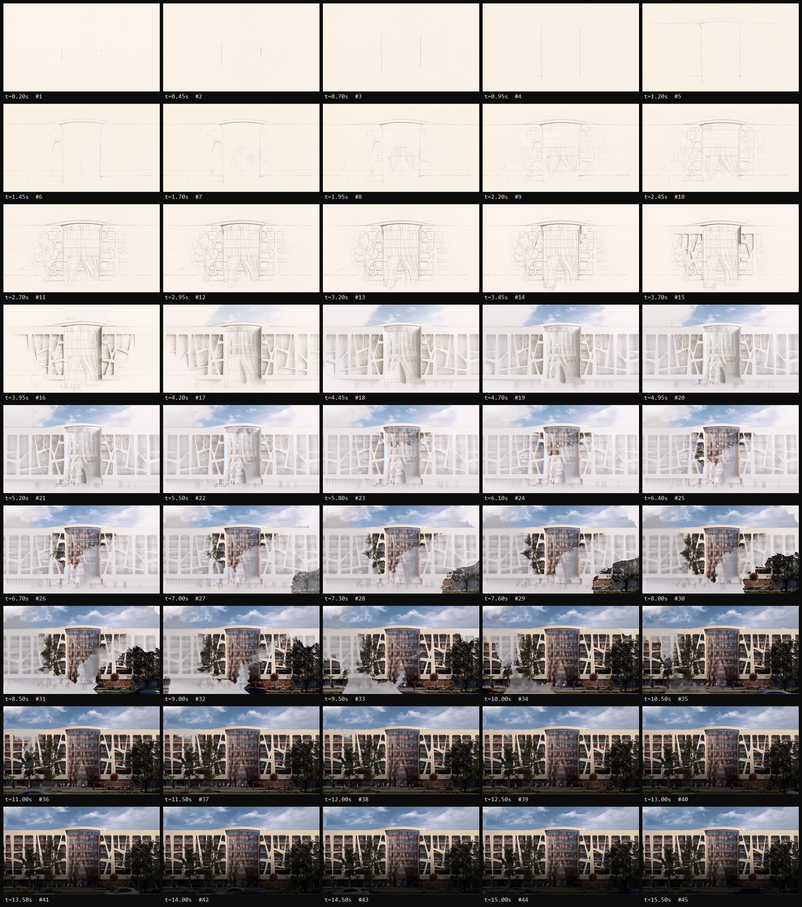
挑出 10 帧放大看：线稿如何“落笔”、白模如何与天空分离、显影边界如何保持湿润感，以及最后一帧与你截图的对应关系。
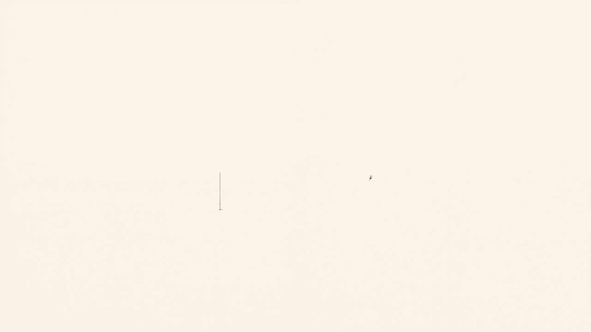
00.20s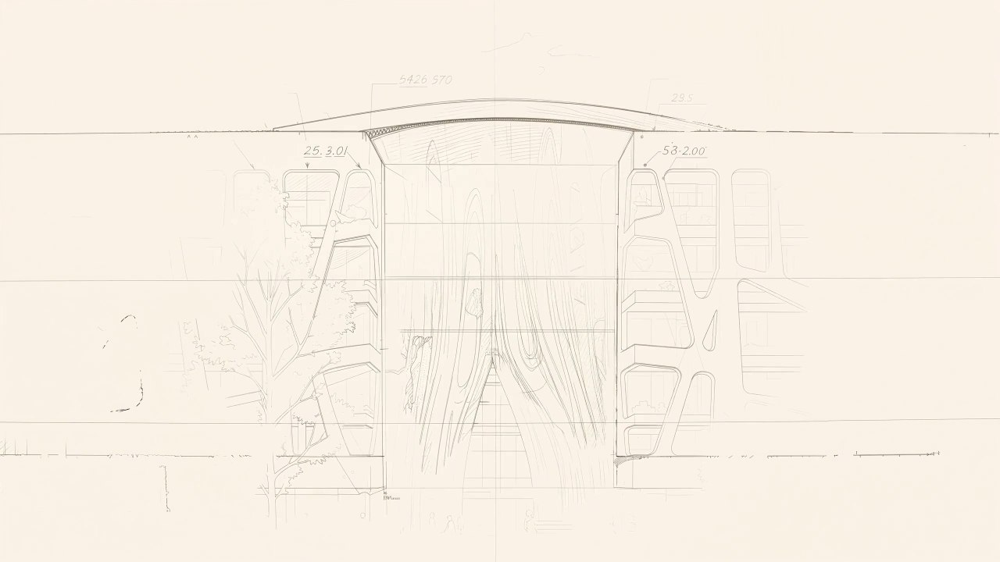
02.20s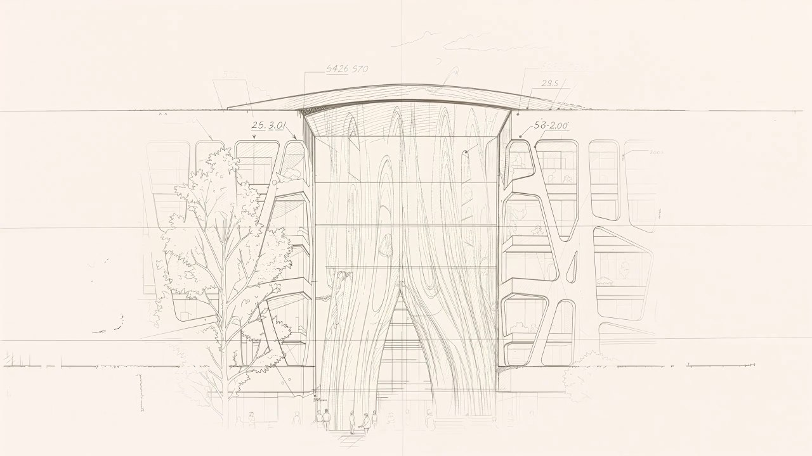
03.20s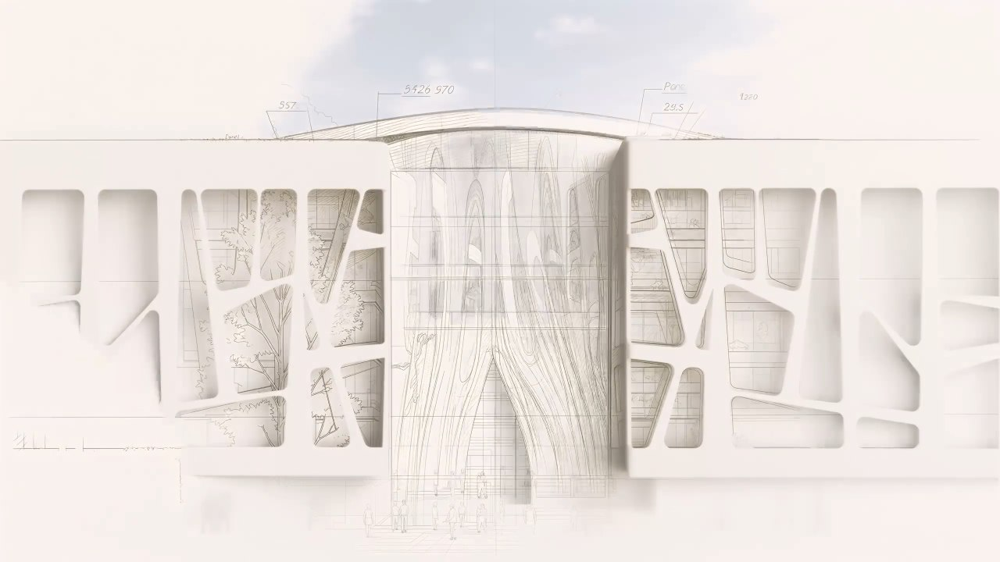
04.20s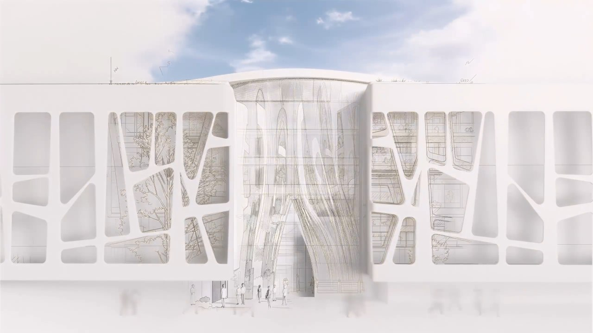
04.95s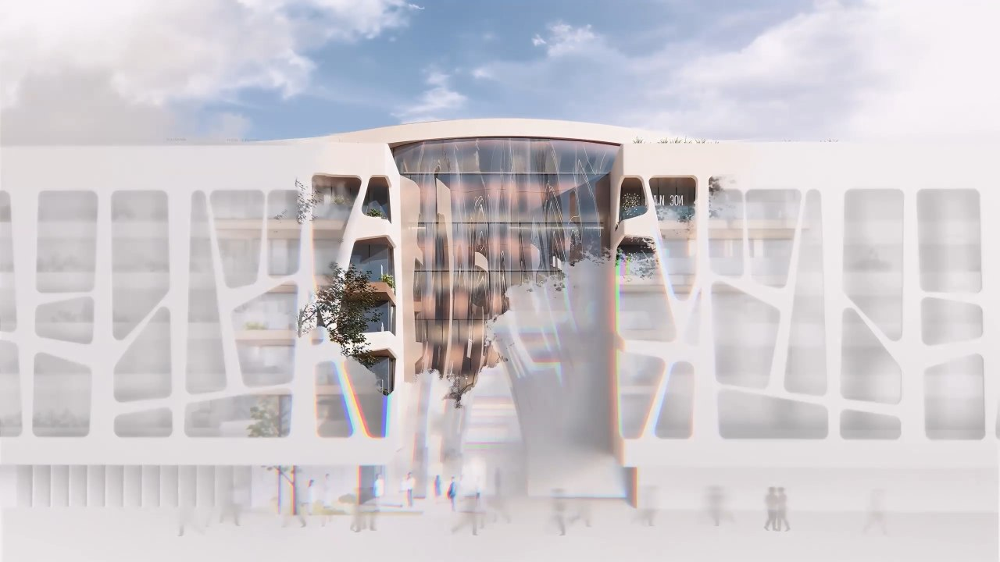
06.70s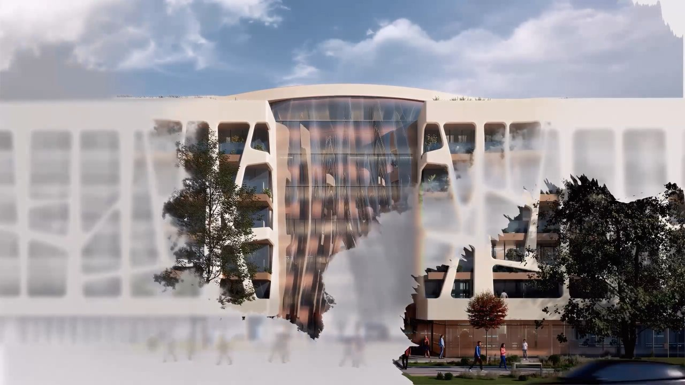
08.50s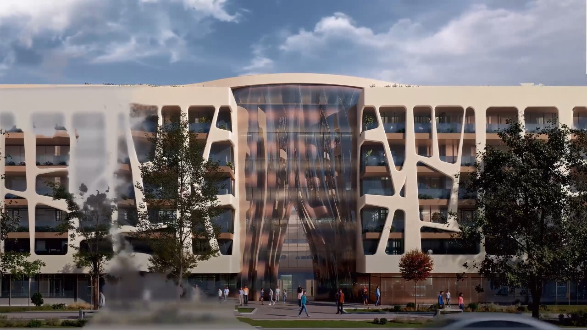
10.50s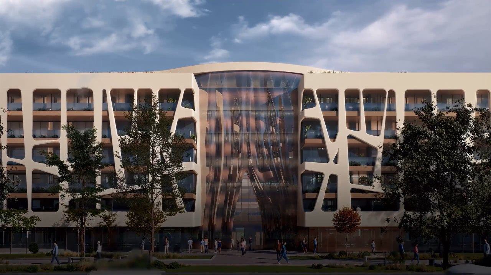
13.00s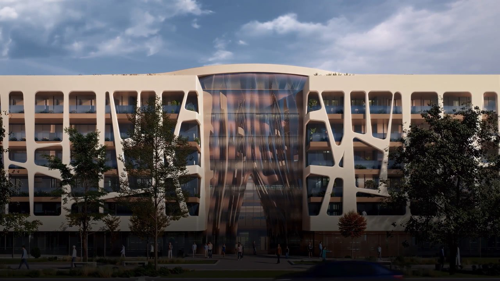
15.50s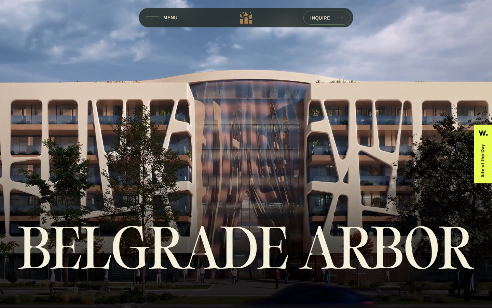
LIVE · 1440×900拖动滑杆或用方向键逐帧查看 45 帧原图。适合核对转场的关键节点，例如 4.6 秒天空上色、6.7 秒显影边界、10.5 秒白雾退场。
这支片子承担了全部美术，页面只做三件事：盖住等待、把它铺满、在结束后把标题逐字抬起。以下代码依据线上压缩包还原，变量名已改写。
没有 canvas，没有 shader。容器是 h-svh，视频 object-cover 铺满，preload="none"，等加载器结束再 play()。这样首屏不抢带宽，视频的加载时间被 2 秒的假进度完整遮住。
0→100 的计数由 GSAP 补间驱动，时长固定 2 秒，与视频真实缓冲无关。计数结束 → 0.5 秒淡出 → 隐藏加载器 → 播放视频 → 解锁 Lenis 滚动。等待感被精确控制，而不是听网络的。
// 开场：锁定滚动 → 选源 → 假进度 → 淡出 → 播放 function Hero({ src, mobileSrc }) { const video = useRef(null); const titleWrap = useRef(null); const h1 = useRef(null); const [loading, setLoading] = useState(true); const [pct, setPct] = useState(0); const lenis = useLenis(); useGSAP(() => { lenis.current?.stop(); // 加载期间禁止滚动 video.current.src = matchMedia('(max-width: 600px)').matches ? mobileSrc : src; // 移动端换 webm video.current.load(); const counter = { value: 0 }; gsap.to(counter, { value: 100, duration: 2, // 固定 2 秒，不看网络 ease: 'power1.inOut', onUpdate: () => setPct(counter.value), onComplete: () => { gsap.to('.loader', { opacity: 0, duration: 0.5, ease: 'power2.out', onComplete: () => { setLoading(false); video.current.play(); // 视频在这里才真正开始 lenis.current?.start(); } }); } }); }, { scope: heroScope }); }
// 视频播完（15.6s）才允许标题出现：整块淡入 + 逐字符上浮 onEnded={() => { const split = new SplitText(h1.current, { type: 'chars' }); gsap.set(split.chars, { opacity: 0, y: '2rem' }); gsap.timeline() .to(titleWrap.current, { opacity: 1, duration: 0.8, ease: 'power2.out' }, 0) .to(split.chars, { opacity: 1, y: 0, duration: 0.9, stagger: 0.05, // 每个字符依次抬升 50ms ease: 'power2.out' }, 0); }}
/* 标题：Editorial Old，300 字重，10.5vw，全大写 */ .huge { font-family: var(--font-editorialOld); font-weight: 300; line-height: 1; } h1.hero { color: #f4f0db; font-size: 10.5vw; text-transform: uppercase; } /* 悬浮玻璃胶囊：不是图片，是 backdrop-filter */ .nav-pill { position: fixed; top: 24px; left: 50%; transform: translateX(-50%); max-width: 640px; width: 100%; z-index: 100; border-radius: 28px; background: rgba(31,38,30,.80); backdrop-filter: blur(16px); } /* 色板（页面里实际使用的值） */ --vanilla:#fdfbef --sand:#f4f0db --cream:#fff4d6 --cream-dark:#ccbf99 --golden:#a68150 --green:#60735c --pine:#2e3a26
把每一帧当作合成结果来看，这支片子由六层素材叠出来。它刻意让每一层都保留“材料的痕迹”：纸的噪点、铅笔的轻重、模型的软阴影、湿边的毛糙、玻璃的色散。
奶油纸底 #f4f0db 附近，带高频噪点与轻微暗角。整段动画几乎不出现纯白，避免了“屏幕感”。
立面线稿不是均匀透明度，而是按路径分段生长；开口里有植物排线，顶部有尺寸标注与引线，底部有人物剪影。
无材质的白模渲染：开口是纯纸色，只有 AO 与软阴影。它负责让建筑先“立起来”，但拒绝给出任何颜色信息。
真实云层照片，比主体更早上色。天空一到位，白模就被读成“纸板模型”，而不是未完成的渲染。
全彩建筑渲染，含玻璃反射、树影、铺装与行人。显影时它先从中央玻璃体出现，再沿体块向两侧长。
有机柔边遮罩 + 白雾残留 + 彩虹色散。边界像湿纸被撕开，且刻意留下少量白雾延迟退场。
<video src="/home/hero.mp4">，没有 canvas、没有 WebGL 初始化；45 帧的画面变化与 15.60 秒、25 fps 的源视频逐帧对齐；标题是唯一的 DOM 叠层。因此线稿生长、白模转彩、湿边显影、色散与调色，全部是后期烘焙进视频的，浏览器只负责播放。你的项目已经在用同一套叙事语法。若要把这段参考落到河海首页，最稳的是“预渲染视频 + 极简壳层”，而不是继续用 CSS 去模拟湿边与色散。
全部素材保存在本工作区，可直接双击查看。视频仅用于离线比对，不随页面发布。
| 文件 | 说明 | 大小 |
|---|---|---|
| captures/belgrade-arbor/video/hero.mp4 | 源开场视频，2560×1440 / 25fps / 15.60s | 9.03 MB |
| frames/contact_sheet.jpg | 45 帧接触表，5×9 排列 | 911 KB |
| frames/f_01 … f_45 | 45 张逐帧截图，1280×720，文件名含时间码 | 5.9 MB |
| reference-final-state.png | 你提供的目标截图（完成态） | 3.52 MB |
| live-1440x900-title.png | 线上实拍：视频结束、标题浮起后的 1440×900 完成态 | 1.24 MB |